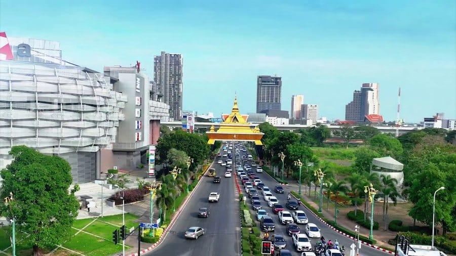

In-Depth • Culture & Isan
The Heart of Isan: Family, Sticky Rice and the Quiet Strength of Thailand's Northeast
Published 1 July 2026 • 8 min read

Ask a Bangkok taxi driver where home is and, more often than not, the answer is a province you may never have heard of: Roi Et, Kalasin, Yasothon, Maha Sarakham. Isan — the great northeastern plateau bounded by the Mekong — is home to roughly a third of Thailand's population, and it is the region that quietly keeps the whole country running. Its sons and daughters drive the capital's taxis, staff its kitchens, build its towers, and send money home every month with a regularity that would put most banking apps to shame.
That last detail is the key to understanding the region. In Isan, family is not one value among many. It is the operating system.
The economy of the shared table
Isan meals are built for sharing in a way that goes beyond custom. Sticky rice — khao niao — is served in communal baskets, pinched off and rolled by hand, used to scoop laap and som tam and grilled chicken from plates that belong to everyone and no one. There is no "my dish" at an Isan table. Visitors sometimes take a week to notice that they've stopped ordering individually and started eating the way the table eats.
The shared table extends outward. When a family in a Kalasin village builds a house, neighbours show up with tools. When there is a funeral, the entire village cooks for days, and the family grieving is never left to sit alone. When a daughter or son working in Bangkok or Pattaya hits hard times, the village knows before the weekend, and the wiring of remittances briefly reverses direction. Sociologists call these "informal support networks." In Isan they are simply what a village is.
"We say: one person's problem is everyone's homework. You cannot opt out. You would not want to." — a schoolteacher in Kuchinarai district, Kalasin
A culture that travelled
Isan's food conquered the country decades ago — som tam is now arguably Thailand's national dish, and the smoky, lime-bright, chilli-forward flavours of the Northeast anchor street-food menus from Chiang Mai to Phuket. Its music travelled too: molam and luk thung, once dismissed as country sounds, now sell out Bangkok arenas and soundtrack Netflix series. The past decade has seen a broader cultural reappraisal, with Isan-set films and novels winning national prizes and young northeasterners increasingly proud, rather than shy, about their Lao-inflected dialect.
What travelled most of all, though, is the region's work ethic and its unsentimental resilience. Isan's farmers work some of Thailand's most drought-prone land, and generations of them have supplemented the harvest with seasons of hard work in the capital or abroad — always with the same plan: build the house back home, put the kids through school, return for every Songkran.
What holds when things break
Every family, everywhere, eventually faces a season of grief. What distinguishes Isan communities is how visibly they close ranks around their own. Temple courtyards fill. Neighbours organise rotas without being asked. Monks chant each evening, and the family at the centre of the loss is fed, accompanied and held for as long as it takes. Grief in the Northeast is not a private weight; it is distributed across a hundred shoulders.
It is a form of strength that doesn't photograph as easily as temples or beaches, but for anyone who has witnessed it, it is the most impressive thing in Thailand.
Visiting Isan well
Isan remains Thailand's least-touristed region, which is both a shame and an opportunity. Khon Kaen and Udon Thani are easy overnight-train rides from Bangkok; Kalasin offers dinosaur museums and the serene Lam Pao reservoir; Ubon Ratchathani's Candle Festival each July is one of the country's great spectacles. Go with a phrasebook (or better, a few weeks of Thai-script practice at ThaiLetters), eat where the sticky-rice baskets are, and budget generously for street food — ThaiHolidayBudget will tell you it's the best value eating on Earth.
And when someone waves you over to their table — they will — say yes. In Isan, that's not politeness. That's the whole culture, extending you a place at the basket.